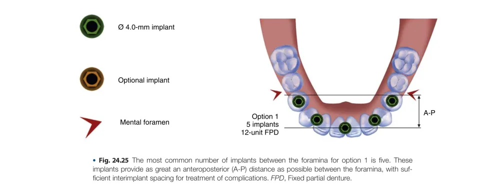
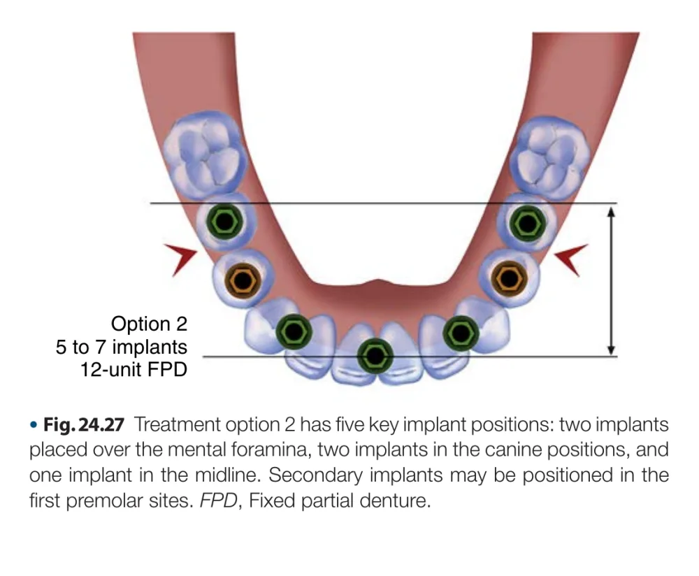
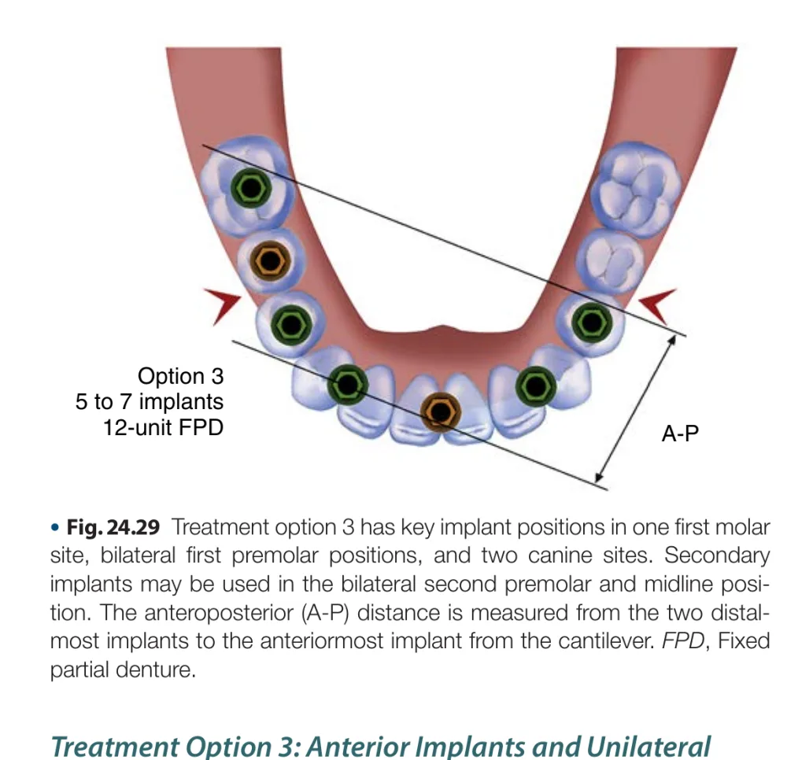

نسخه استخراجشده؛ ترجمه یا تأیید علمی انجام نشده است. وضعیت: captured
گزینهی ۱ — رویکرد برانمارک.
این طرح درمان کلاسیک شامل چهار تا شش ایمپلنت میان فورامنهای منتال است، با کانتیلورهای دیستال دوطرفه که دندانهای خلفی مندیبل را — معمولاً تا ناحیهی مولر اول — جایگزین میکنند.
و پایهی بیومکانیکیاش یک واقعیت آناتومیک است: «مندیبل میان فورامنهای منتال خم نمیشود و تورشن معناداری نشان نمیدهد. بنابراین ایمپلنتهای قدامی میتوانند بدون ریسک یا مصالحه به هم اسپلینت شوند.» — تمام گزینههای بعدی، تلاش برای بیرون رفتن از همین ناحیهی امناند.
و کارنامهی این گزینه: بقای ایمپلنت ۸۰ تا ۹۰ درصد برای ۵ تا ۱۲ سال پس از سال اول بارگذاری. و در یک مطالعهی درازمدت ۱۸ تا ۲۳ ساله، نرخ موفقیت ۸۴ درصد.
شکل ۲۴٫۲۵ رایجترین شمار را نشان میدهد: شایعترین تعداد ایمپلنت میان فورامنها برای گزینهی ۱ پنج است — که بیشترین فاصلهی A-P ممکن میان فورامنها را میدهد، با فاصلهگذاری کافی میان ایمپلنتها برای درمان عوارض.
خلاصهی گزینهی ۱:
و فهرست کاملتر شرایط بیمار مناسب: این گزینه باید برای بیمارانی نگه داشته شود که عوامل نیروی پایین دارند، در مقابلِ یک پروتز متحرک هستند، نیروی گاز پایینتر دارند، تراکم استخوان مساعد و استخوان موجود برای ابعاد ایدهآل ایمپلنت دارند.
گزینهی ۲ — تکنیک اصلاحشدهی برانمارک.
پژوهشگران مندیبلهای دنداندار و بیدندان را ارزیابی و یک مدل سهبعدی کرنش استخوانی خمش و تورشن ساختند تا ببینند کدام گزینههای اسپلینتشده، بنیان پروتزی را به خطر نمیاندازند.
و تغییر جزئی این است: افزودن ایمپلنتهای اضافی روی فورامنهای منتال — چون مندیبل در دیستالِ فورامن خم میشود، نه روی آن.
و سه مزیت شمارهدار — هر سه باید شمرده شوند:
و یک نکتهی نامگذاری که باید بشناسی: موقعیتهای کلیدی گزینهی ۲ گاهی «موقعیتهای پرمولر دوم، موقعیتهای کانین، و انسیزور مرکزی یا میدلاین» نامیده میشوند و گاهی «دو ایمپلنت روی فورامنهای منتال، دو ایمپلنت در کانین، و یکی در میدلاین». این تناقض نیست — دو نام برای یک محل است: محل روی فورامن منتال، از نظر دندانی همان موقعیت پرمولر دوم است. اگر این را ندانی، ممکن است گمان کنی دو طرح متفاوتاند.
و چرای مزیت سوم: «طول کانتیلور بهطور چشمگیری کاهش مییابد، چون دیستالیترین ایمپلنتها دستکم یک دندان خلفیتر قرار میگیرند.»
موقعیتهای کلیدی گزینهی ۲ (پنج موقعیت): دو ایمپلنت روی فورامنهای منتال، دو ایمپلنت در موقعیت کانین، یک ایمپلنت در میدلاین. و موقعیتهای ثانویه: پرمولر اول دوطرفه — که بیشتر وقتی اندیکاسیون مییابند که عوامل نیروی بیمار از حد معمول بیشتر باشند.
و یک نکتهی بیومکانیکی که بهراحتی از قلم میافتد: پیشنیاز گزینهی ۲، وجود استخوان کافی در ارتفاع و عرض روی یک یا هر دو فورامن است. اما ناحیهی فورامن اغلب به ایمپلنتهایی با ارتفاع کمتر نسبت به ایمپلنتهای قدامی نیاز دارد.
و اینجا یک مشکل بیومکانیکی است: «دیستالیترین ایمپلنت بیشترین بار را تحمل میکند وقتی بار روی کانتیلور اعمال میشود (بهعنوان تکیهگاه عمل میکند)؛ بنابراین بیشترین نیروها روی کوتاهترین ایمپلنتها ایجاد میشوند.»
و راهحل: حداقل ارتفاع ایمپلنت ۸ میلیمتر، همراه با قطر بیشتر یا طراحی با سطح تماس افزوده، برای جبران طول کاهشیافته.
خلاصهی گزینهی ۲: مزایا: کانتیلور کاهشیافته، A-P spread افزایشیافته. معایب: باید استخوان خلفی کافی باشد، ایمپلنت بیشتر لازم است. اندیکاسیونها: عوامل نیروی بالاتر، فرم قوس مربعی.


گزینهی ۳ — ایمپلنتهای قدامی بهعلاوهی ایمپلنت خلفی یکطرفه.
چه زمانی؟ وقتی استخوان کافی روی فورامنها موجود نیست و پشتیبانی باید خلفیتر تأمین شود.
و پشتوانهی علمیاش: یک مدل کرنش از مندیبل بیدندان نشان داد ایمپلنتهای یک بخش خلفی میتوانند بدون مصالحه به ایمپلنتهای قدامی اسپلینت شوند.
و شاهد بالینی درازمدت: پیگیری ۲۰ سالهی پروتزهای ثابت قوس کامل با یک سگمنت خلفی متصل به ناحیهی قدامی، هیچ عارضهی اضافهای در مقایسه با سگمنتهای مستقل نشان نداد.
ترکیب معمول: ایمپلنتهای اضافی در موقعیت مولر اول یا پرمولر دوم (یا هر دو)، متصل به چهار یا پنج ایمپلنت میان فورامنهای منتال. در نتیجه معمولاً پنج تا هفت ایمپلنت در این گزینه قرار میگیرند.
موقعیتهای کلیدی گزینهی ۳: مولر اول (تنها یک طرف)، پرمولر اول دوطرفه، کانین دوطرفه.
موقعیتهای ثانویه: پرمولر دوم در همان سمتِ ایمپلنت مولر، انسیزور مرکزی (میدلاین). و گاهی یک محل اضافی: موقعیت روی فورامن منتال در سمت کانتیلور.
و پاسخ به نگرانی خمش مندیبل: «اگرچه حرکت مندیبل حین عملکرد رخ میدهد، مشاهده نشده که عارضه ایجاد کند — چون سمت مقابلِ ایمپلنت مولر، هیچ ایمپلنت اسپلینتشدهای ندارد.» یعنی نامتقارن بودن طرح، خودش راهحل خمش است.
و حالا مهمترین عدد این درس.
وقتی یک یا دو ایمپلنت دیستالِ فورامن در یک سمت گذاشته و به ایمپلنتهای قدامی متصل شوند، مزیت بیومکانیکی چشمگیری بهدست میآید:
«اگرچه شمار ایمپلنتها ممکن است با گزینهی ۱ یا ۲ برابر باشد، A-P spread ۱٫۵ تا ۲ برابر بزرگتر است — چون در یک سمت، وجه دیستال آخرین ایمپلنت اکنون با وجه دیستال مولر اول متناظر است.»
یعنی با همان تعداد ایمپلنت، A-P spread تا دو برابر میشود. و افزون بر آن، تنها یک کانتیلور وجود دارد، نه دو تا.
و سه دلیل برتری گزینهی ۳ بر ۱ و ۲:
و وقتی عوامل نیرو بیشترند؟ شش تا هفت ایمپلنت برای این گزینه به کار میرود. و رایجترین چیدمان: پنج ایمپلنت میان فورامنها و یک یا دو ایمپلنت دیستال در یک سمت.
و تنها قید این گزینه: «این گزینه به استخوان موجود در دستکم یک ناحیهی خلفی مندیبل نیاز دارد.» — دستکم یک، نه هر دو. و همین است که گزینهی ۳ را از گزینهی ۴ جدا میکند.
خلاصهی گزینهی ۳: مزایا: کانتیلور یکطرفه، افزایش A-P spread. معایب: باید استخوان خلفی کافی باشد، ایمپلنت بیشتر لازم است. اندیکاسیونها: عوامل نیروی بالاتر، فرم قوس مربعی.
